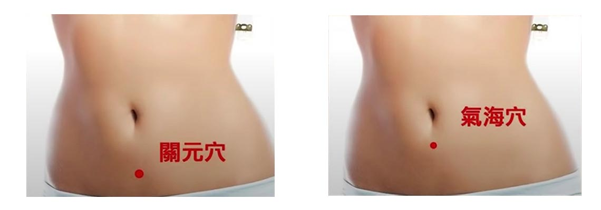
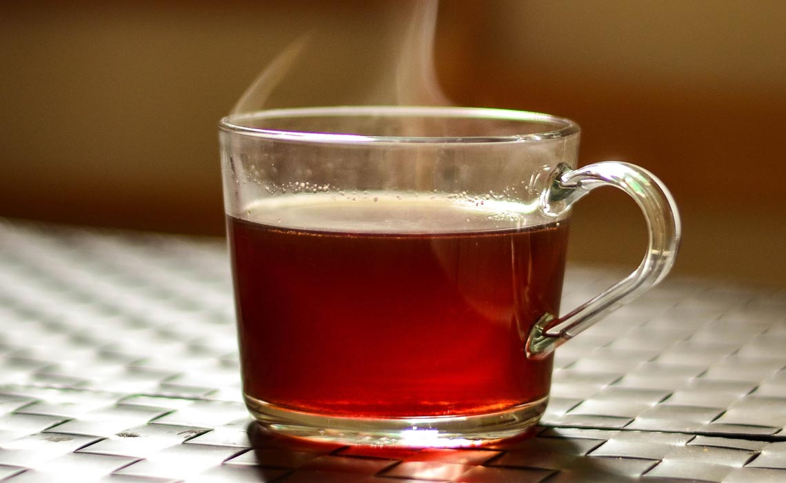

你有沒有這種經驗，剛開始減肥時效果超明顯，肚子一圈一圈的瘦。想說到夏天的時候，就夠把學生時代的牛仔褲再次穿起。正當你志得意滿的時候，突然看到體重「啊！體重機是不是壞掉」，不管怎麼節食怎麼運動，體重就是不會往下掉。對沒錯，這是你遇到減重停滯期了。
只要你是真正認真在減肥的人，你一定會遇到減肥停滯期。但是停滯期時你只要方法用對，你就會加速超過他，再瘦五公斤。
但是方法用錯的話，他就會持續很長，長達你灰心喪志萬念俱灰，然後過了幾週的時間沒有看到效果，通常就會自暴自棄啦，這就是大家普遍減肥失敗的理由。
其實減重停滯期是一個在正常不過的事情，只要你的體重減少5%～10%，就會遇到停滯期。例如說一個70kg的人，在前面3、4公斤可能會覺得「減肥有那麼難嗎，我就是那個天選之人」。突然卡在一個階段，然後它就是下不去。
現代醫學上的講法就是因為你快速減少體重，讓身體誤判處在飢餓狀態，你的身體怕能量不夠用開啟一個保護機制，這種保護機制就是降低身體代謝率，增加食物的吸收。中醫上的講法是在減肥的過程中會消耗氣，氣虛。讓身體被動去降低新陳代謝。
不管是哪一種講法，它都是同一件事情那就是數週或數月身體達到新的平衡才會繼續瘦。今天就來教大家幾個超級簡單的方法，突破停滯期。
1 改變運動習慣
在這期間你如果一直在做一樣的運動你身體就會習慣它，效果也會越來越爛，這裡建議大家就是讓自己的身體接觸新的運動，可以把原來的運動一半改成新有氧，一半改成重訓。例如平常習慣的是慢跑，這是你把它改成踩飛輪或者是游泳，另一半就試著加入一些重訓。
不要一聽重訓覺得很難，如果你平常完全不進健身房，居家做深蹲，跪著做伏地起身，慢慢的進步。如果平常就有在健身房就增加健身的量，身體接受新刺激，提高基礎代謝率，加速度鍋減重停滯期。
2 兩個穴道
只要按摩這兩個穴道，就可以被動增加新陳代謝，加速減重效果。哪兩個穴道呢？
氣海穴和關元穴，男生女生都可以按，肚臍下方1.5吋、肚臍下方3吋，每天晚上啊各按摩3分鐘，輕輕按摩就好。很多人覺得按摩穴道越用力越有效，按到都瘀青，那就太over啦。

3 一杯茶
鮮盈玫瑰茶（玫瑰、荷葉、山楂、茯苓、陳皮）。
荷葉去油解膩、山楂消食化積，茯苓健脾利水、陳皮理氣去濕、玫瑰可以氣疏通，對於你減肥的停滯期非常非常有效果，將玫瑰、荷葉、山楂、茯苓、陳皮各3g放進小布包裡面，平常就是一天一包，泡到沒味道為止，可以上班時間喝，運動時間喝效果會更好。

4 洗澡時泡個澡
一週泡1～2次，泡澡時加5薑片，排汗消脂，氣血循環更好，這個也算是效果超級好的被動突破減重停滯期的辦法。
5 改變飲食
每日蛋白質攝取體重*1.2，單位是克。蛋白質攝取公式：體重70公斤*1.2=84g，這樣吃蛋白質就可以預防肌肉分解流失，肌肉量過低就會嚴重停滯。同時停滯期澱粉不能吃太少，因為五穀雜糧類它是可以滋補脾胃之氣，如果減肥把澱粉減到所有飲食的5%～10%，甚至有有人完全不吃澱粉，那就非常傷氣、耗氣，氣虛了新陳代謝自然很差，氣虛後就容易貧血、掉頭髮，而且一恢復飲食後就會非常容易復胖。
體質中性寒性者，運動不夠的人，建議維持澱粉量在總飲食的20%，氣足是突破停滯期關鍵。
總結
只要這5招你願意真的去做，它真的可以幫助你縮短停滯期，讓你繼續享受減重的成果。